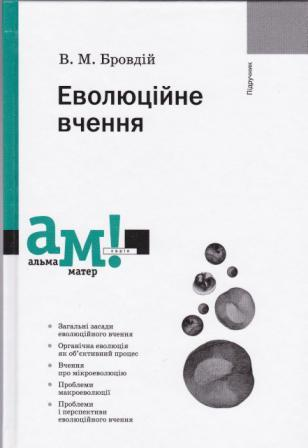
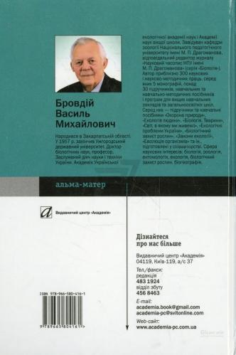
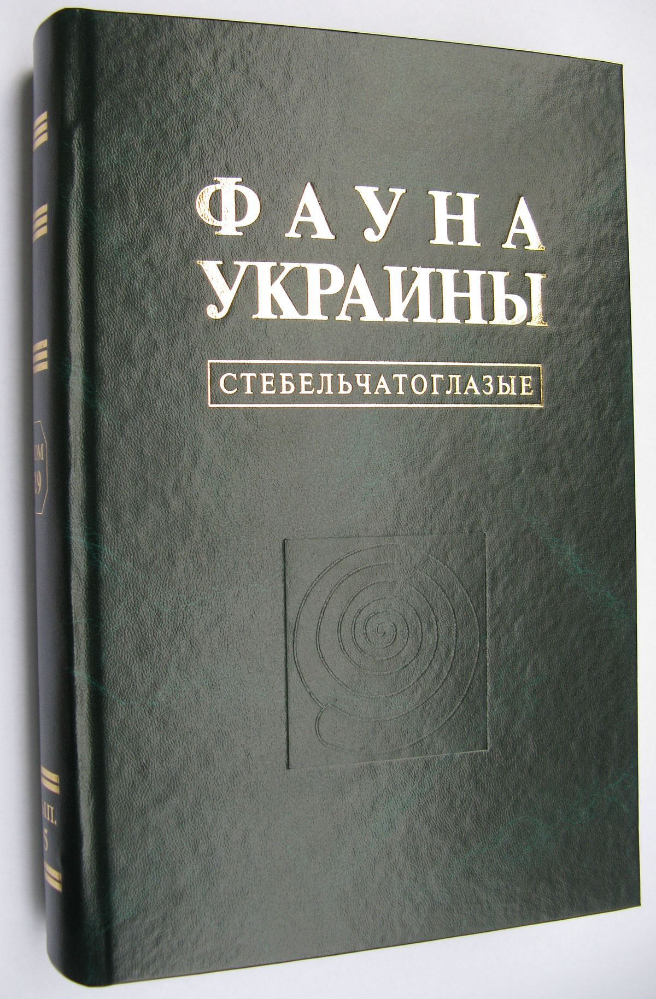

Наукова діяльність
Автор понад 300 наукових і навчально-методичних праць, серед яких 5 монографій, близько 30 підручників, навчальних посібників і програм для ВНЗ і загальноосвітніх середніх шкіл. Серед фундаментальних наукових монографій — три випуски видання «Фауна України» (1973, 1977, 1983), присвячених жукам-листоїдам, а також два видання колективної монографії «Вредители сельскохозяйственных культур и лесных насаждений» (1974, 1988).
Популярністю серед освітян користуються підручники та навчальні посібники для ВНЗ і середньої школи «Охорона природи» (1997), «Екологія людини» (1997, 1998, 2000, 2004), «Біологія. Тварини» (1997), «Екологічні проблеми України» (2000), «Біологічний захист рослин» (2004), «Закони екології» (2006) та інші, написані із співавторами.
Член Національної комісії з питань Червоної книги України, науковий консультант Верховної Ради України з екополітики. Член контрольно-ревізійної комісії АН ВШ України з 2007 р.
  